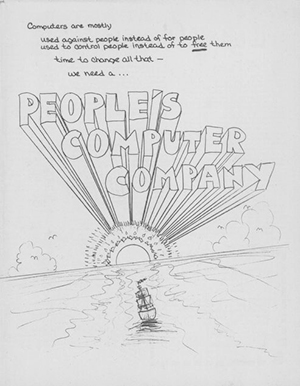
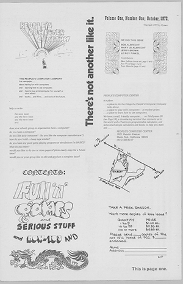
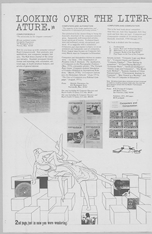

Premier numéro du bulletin d'information de la People's Computer Company, paru en octobre 1972.
Ce bulletin a été créé par Bob Albrecht, Mary Jo Albrecht, Jerry Brown et Leroy Finkel afin de promouvoir l'apprentissage et l'accès
à l'informatique par la diffusion du langage de programmation BASIC et la promotion de leurs initiatives éducatives avec les ordinateurs.

Vous pouvez on apprendre d'avantage sur Bob Albrecht .

